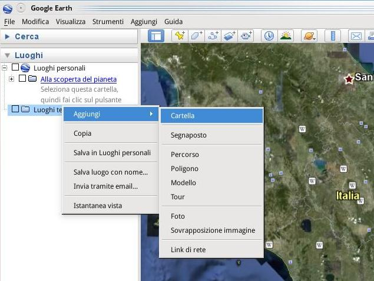
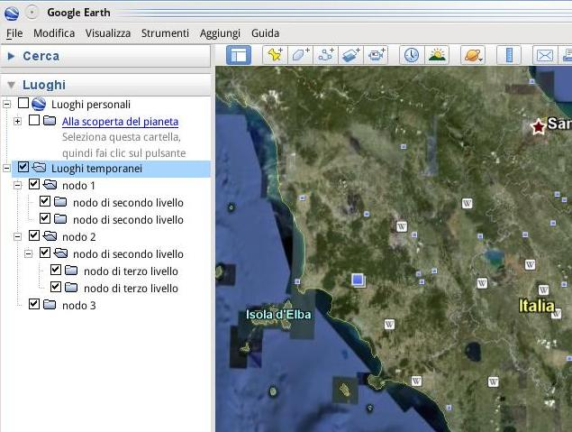

Prima di entrare nel vivo di questo brevissimo tutorial, caliamoci nello scenario adatto:
supponiamo che vi siano arrivati dei geodati o delle informazioni geografiche su cui lavorare e che dobbiate, una volta completata la loro elaborazione, mostrare il risultato del vostro brillante operato a qualcuno che non può sedersi di fronte al monitor del computer con voi ed è colto da visioni apocalittiche al solo sentir nominare uno shapefile o pensa che PostGIS sia un piatto tipico.
Che fare? Mettere in piedi un’applicazione di webmapping “vera” (per esempio con MapFish) richiede quel minimo di tempo, di cui non è sempre detto che si disponga, e ci costringe a scrivere un po’ di codice… cosa che oggi non abbiamo assolutamente voglia di fare 
Per fortuna, per soddisfare in maniera rapida e indolore la sete di “sapere geografico” del nostro interlocutore, possiamo approfittare dei servigi di Google.
Fatto il doveroso preambolo, passiamo alla pratica.
Creeremo un’applicazione che, pur non essendo di webmapping in senso stretto, svolgerà egregiamente il suo compito, vale a dire condividere online l’informazione geografica in maniera estremamente speditiva e piuttosto efficace.
Di cosa c’è bisogno?
- dei vostri geodati in formato KML o KMZ;
- di un account Google[1] che, se usate Gmail, avete già;
- Google Earth.
Per trasformare i dati in KML ci sono un’infinità di metodi e di programmi più o meno adatti alle varie esigenze, quindi non entreremo nel merito di questa operazione nel tutorial.
Personalmente, se sto lavorando con ArcGIS, per esportare le feature in formato KML direttamente da ArcMap utilizzo questo script liberamente scaricabile dal sito di ESRI.
In alternativa possiamo ottenere tutti i KML che vogliamo sfruttando la libreria GDAL/ORG (magari attraverso FWTools).
Una volta che i file KML sono pronti all’uso potremmo già pubblicarli su Google Maps grazie al nostro account (utilizzando il link “My maps” o, in italiano, “Le mie mappe” nella home page di Google Maps), ma noi vogliamo di più!
Spesso, infatti, allo scopo di rendere più leggibile l’informazione che vogliamo comunicare con una mappa, è comodo organizzare i contenuti in categorie da mostrare secondo una struttura ad albero composta da cartelle e sottocartelle (del tutto simile a quella ottenibile con il widget layer tree di MapFish).
Per creare questa struttura lanciamo, quindi, Google Earth e aggiungiamo le varie cartelle con un semplice click destro sulla cartella predefinita “Luoghi temporanei”. Si aprirà un menu contestuale dal quale selezioneremo la voce “Aggiungi” e poi “Cartella”:

Ripetiamo questa operazione tante volte quanti sono i nodi (o rami, se preferite) dell’albero che stiamo impostando e, se necessario, annidiamo sottocartelle a piacimento:

Ora che la struttura ad albero è pronta aggiungiamo i file KML dal menu “File” → “Apri” di Google Earth e poi spostiamoli diligentemente uno per uno all’interno della cartella desiderata. Infine, salviamo tutto in un unico file KML (o KMZ) cliccando col tasto destro del mouse sulla cartella “Luoghi temporanei” (che dovrebbe risultare la radice dell’albero).
Siamo finalmente pronti per pubblicare il risultato online tramite Google Maps ed è qui che entra in gioco il servizio Google Sites collegato col nostro account.
Grazie ad esso, infatti, disponiamo di uno spazio web sul quale possiamo caricare file di svariati tipi tra cui, ovviamente, anche KML e KMZ.
Accediamo quindi alla pagina principale del nostro account Google e, una volta effettuata l’autenticazione, clicchiamo sul link “Google Sites”. Se è la prima volta che utilizziamo il servizio, creiamo un nuovo sito cliccando sul bottone apposito.
Scegliamo la modalità preferita per caricare il nostro KML (è possibile allegarlo ad una pagina qualsiasi, magari alla homepage, che troviamo bella e pronta, o creare un “File cabinet” allo scopo).
Da adesso in poi la risorsa caricata sarà disponibile all’URL http://sites.google.com/site/nomesito/nomefile.kml
Per vedere il risultato finale incolliamo questo URL nel campo di ricerca di Google Maps, clicchiamo sul bottone “Cerca sulle mappe”… et voilà[2]
Non resta che copiare l’URL della nostra mappa cliccando sull’apposita voce “link” che appare in alto a destra in Google Maps ed inviarlo a chi ci pare! 
…
[1]Disponendo di uno spazio web alternativo su cui caricare i file possiamo farne a meno
[2]I simboli utilizzati sono quelli disponibili di default in Google Earth… Vi consiglio anche di visitare i luoghi dell’esempio se capitate da quelle parti 
I contenuti potrebbero non essere più adeguati ai tempi!

By Pietro Blu Giandonato on mag 5, 2009
Come abbiamo già detto altre volte qui su TANTO, Google Earth è senza dubbio il software geografico più abbordabile per chi di GIS e webmapping non ha sentito mai parlare, e non ne ha molta intenzione…
Personalmente uso GE proprio con coloro che hanno bisogno essenzialmente di visualizzare rapidamente dati spaziali, anche in forma semi-collaborativa. Se c’è necessità di condividere file kml/kmz che vengono aggiornati spesso, è perfetto Dropbox, del quale sono addicted ormai da tempo per vari motivi. Si tratta di un software multipiattaforma che offre 2GiB di spazio online (free) per la sincronizzazione di file e documenti. Tra le altre cose, Dropbox mette a disposizione una cartella nella quale pubblicare ciò che si vuole, ogni file collocato in essa avrà un URL mediante il quale potrà essere raggiunto pubblicamente.
Veniamo al dunque. Basterà collocare nella cartella Public il file kml/kmz creato come Alessio ha spiegato nel suo post, e si avrà il vantaggio di tenere sempre sincronizzato detto file ogni volta che verrà modificato, senza l’onere di ripubblicarlo ogni volta su servizi di hosting. Le persone alle quali avrete comunicato l’URL del file avranno dunque sempre a disposizione l’ultima versione dei vostri dati.
Qui un esempio da caricare in GE, mentre qui in Google Maps…
By Raffaele on mag 29, 2009
Ciao,
complimenti per il post, ma volevo chiederle se una volta caricati i propri kml, google aggiorna i propri dati con quelli appena caricati? se no come bisogna fare per aggiornare quei dati???
By Alessio on mag 29, 2009
Ciao Raffaele e grazie del commento innanzitutto.
Non so se ho ben capito la domanda (di venerdì serà non brillo certamente per sagacia… ;-D ), provo a rispondere.
I dati che carichi sul *tuo* spazio web restano lì dove li hai messi. Non vengono in alcun modo presi o manipolati da terzi.
Quello che accade è che le informazioni presenti nel kml sono usate da Google Maps per sovrapporre “al volo” un layer alla mappa di base, è solo una visualizzazione insomma.
Su Google Maps “generale” non cambia nulla (e meno male, sennò sai che casino…).
Per quanto riguarda l’aggiornamento, sei tu, creatore/editore/proprietario del file kml o kmz a doverlo aggiornare, e caricare sul server la nuova versione.
Google ti da solamente le mappe di base su cui sovrappore quello che vuoi ed una serie di risorse per permetterti da fare quanto descritto nel tutorial.
Spero di aver risposto alla domanda che hai posto e non ad una che ho immaginato io.
ciao, alessio
By Raffaele on mag 29, 2009
grazie mille per la risposta immediata, ma non è proprio quello che mi aspettavo. Io vorrei rilanciare (parolona) il mio territorio utilizzando i Sistemi Informativi Territoriali e uno dei tanti passi da fare è anche quello di riuscire ad aggiornare i dati di google, sembrerà assurdo ma ti facci un esempio … se fai una ricerca con GE o GM di ristoranti ad Ariano irpino ne troverà pochi rispetto a quanti ce ne sono realmente. Se una persona dovesse venire ad Ariano come scelta avrebbe soltanto quei pochi ristoranti e si soffermerebbe li … invece se i ristoranti presenti su google fossero tutti sarebbe diverso.
spero essere stato chiaro
raffaele
By Alessio on mag 29, 2009
Ecco… non avevo proprio capito… però con l’argomento della guida non è che c’entri granché a meno che tu non voglia creare un tuo portale, basato su google maps (però in quel caso sfrutterei direttamente le api)
Se vuoi integrare le informazioni di Google Maps relative al tuo territorio forse la strada giusta è questa:
http://www.google.com/local/add/splashPage?hl=it&gl=IT
Però ipotizzo che tu debba coinvolgere direttamente i titolari degli esercizi che vorresti comparissero…
By Raffaele on mag 30, 2009
hai centrato nell’obbiettivo, cmq l’ho provato ieri sera e come hai detto tu “coinvolgere direttamente i titolari degli esercizi che vorresti comparissero…” oppure farlo io al loro posto …
By fabio on giu 21, 2009
I dati pubblicati in google, sono solo visualizzati, non è possibile interrogarli con identify? Se dovessi pubblicare dati consultabili (es. i risultati elettorali per sezione) quale strumento utilizzeresti?
By Alessio on giu 21, 2009
Cliccando sul punto viene fuori il popup con la descrizione inserita al momento della creazione del dato, tu cosa intendi per interrogazione con identify?
Comunque per il tuo scopo, a naso, penso che exhibit vada bene
By fabio on giu 23, 2009
In realtà la mia necessità è quella di pubblicare dati realizzati con arcview e renderli consultabili con un sistema ad interfaccia GIS. Ho fatto un pò di prove con google earth, semplice ed immediato, ma i dati pubblicabili sono limitati (non posso consultare le tabelle collegate agli shape file).Credo che la soluzione sia insistere con map server, anche se ho già avuto qualche problema di installazione. Grazie, Fabio.
By silvia dalla costa on dic 17, 2009
ciao, grazie per l’utile tutorial, ti chiedo scusa per la domanda stupida ma mi sono bloccata in un punto: dopo aver creato il kmz di uno shape ed essermi creata un mio sito non riesco a capire come pubblicare iol kmz nella home. Mi daresti una mano?
grazie mille
Silvia
By Alessio on dic 17, 2009
Ciao Silvia,
se ho capito bene quello che chiedi, non mi ricordo se puoi caricare file direttamente nella home di un google site. Puoi facilmente aggirare il problema creando una pagina e caricando lì il file kmz/kml (c’è il bottone “aggiungi file”). Poi da google maps, inserirai http://sites.google.com/site/nomesito/nomepagina/nomefile.kml nella barra di ricerca
Ciao
PS
Se per te è fondamentale caricare il file nella pagina Home piuttosto che in una pagina ad hoc, nei prossimi giorni vedrò di verificare…
By Silvia on dic 23, 2009
Grazie Alessio della risposta, proverò senz’altro in questi giorni e ti farò sapere
Silvia
By Laura on apr 5, 2013
Ciao Alessio,
dopo più di tre anni consulto solo ora questo tutorial e lo trovo assolutamente attuale! Complimenti.
Ho letto i vari post e credo di aver superato tutti gli scogli già affrontati dagli altri utenti. Ho per te una sola domanda, una volta caricato su google drive il file KMZ e pubblicato su google site, cliccando sul file mi si apre google maps ma perdo tutte le tabelle e i link che con grande gioia avevo ritrovato nel passaggio iniziale da Qgis a google heart. Cosa mi sono persa? Grazie
By Alessio on apr 5, 2013
Ciao Laura,
grazie per i complimenti!
Non mi sono mai trovato nella tua stessa situazione. Dovrei vedere il KML per capire perché si perde i riferimenti per strada.
Comunque per pubblicare al volo qualcosa di semplice, rispetto al 2009, oggi ci sono altre valide soluzioni, come QGIS Cloud (al quale ti consiglio di dare uno sguardo).
By Laura on apr 6, 2013
La mappa è attualmente disponibile in una vecchia versione a questa pagina (molto provvisoria)
https://sites.google.com/site/lepiazzeunescofirenze/
Come vedrai è un po’ statica! per quanto riguarda Qgis Cluod sembra mooolto interssante! peccato che l’installazione dei plugin non va a buon fine. Ci studierò un po’ su. Intanto grazie!
By Andrea Borruso on apr 7, 2013
Ciao Laura,
ho fatto click sul tuo link, e poi sul link che trovo nella pagina che si apre, ma Google mi dice “Per accedere a questo elemento devi disporre delle autorizzazioni necessarie.”
Saluti
By Laura on apr 15, 2013
Ciao Andrea in effetti non so dirti se il problema è il sito in costruzione o solo una questione di permessi ma se mi mandi la richiesta di accesso ti abilito… non sono ancora molto pratica scusa.
By Andrea Borruso on apr 16, 2013
Ciao Laura,
sono riuscito a fare il download.
Spero di poterci mettere le mani nei prossimi giorni.
A presto